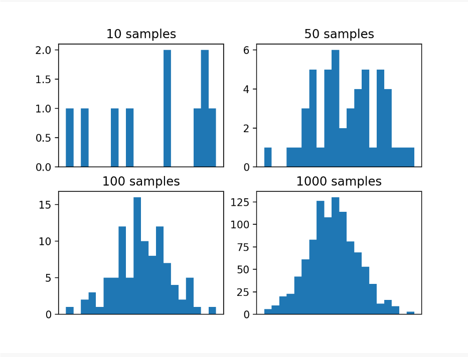
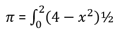
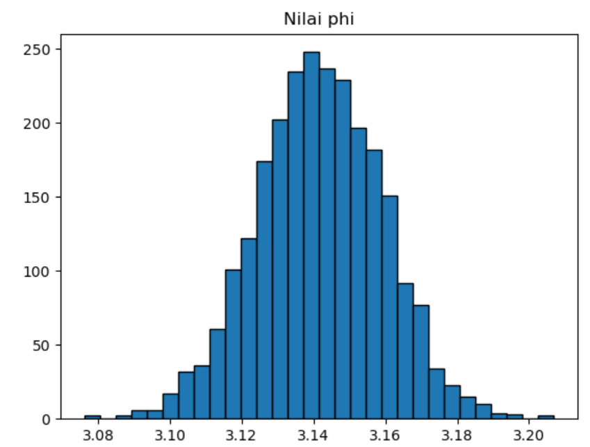

Tugas7
Monte Carlo Methods
Metode Monte Carlo adalah kelas teknik untuk pengambilan sampel secara acak suatu distribusi probabilitas.
Pada Konsep Umumnya:
Telah ditemukan dalam konteks pengembangan bom atom pada tahun 1940-an. Bisa diaplikasikan untuk berbagai masalah. Bukan alat statistik. Bisa mengandalkan pengambilan sampel acak berulang. Biasanya memberikan solusi perkiraan. Bisa digunakan dalam kasus di mana analitis atau numerik solusi tidak ada atau terlalu sulit untuk diterapkan. Juga dapat digunakan oleh Lazy ScientistTM bahkan ketika sebuah solusi analitis atau numerik dapat diterapkan.
Monte Carlo biasanya juga mengikuti beberapa petujuk yaitu:
-
Tentukan sifat statistik input yang memungkinkan
-
Hasilkan banyak set input yang mungkin berikut properti di atas
-
Lakukan perhitungan deterministik dengan set ini
-
Analisis hasilnya secara statistik
Kesalahan pada hasil biasanya berkurang 1 / √ N
Ada banyak domain masalah di mana menggambarkan atau memperkirakan distribusi probabilitas relatif mudah, tetapi menghitung jumlah yang diinginkan tidak bisa dilakukan. Ini mungkin karena banyak alasan, seperti sifat stokastik domain atau jumlah variabel acak eksponensial.
Alih-alih, jumlah yang diinginkan dapat diperkirakan dengan menggunakan pengambilan sampel acak, disebut sebagai metode Monte Carlo. Metode-metode ini awalnya digunakan sekitar waktu ketika komputer pertama diciptakan dan tetap meresap melalui semua bidang sains dan teknik, termasuk kecerdasan buatan dan pembelajaran mesin.
Fungsi NumPy normal () dapat digunakan untuk mengambil sampel secara acak dari distribusi Gaussian dengan rata-rata yang ditentukan (mu), standar deviasi (sigma), dan ukuran sampel.
Untuk membuat contoh lebih menarik, kami akan mengulangi percobaan ini empat kali dengan sampel berukuran berbeda. Kami berharap bahwa ketika ukuran sampel meningkat, kepadatan probabilitas akan lebih baik mendekati kepadatan sebenarnya dari fungsi target, mengingat hukum jumlah besar.
# example of effect of size on monte carlo sample
from numpy.random import normal
from matplotlib import pyplot
# define the distribution
mu = 50
sigma = 5
# generate monte carlo samples of differing size
sizes = [10, 50, 100, 1000]
for i in range(len(sizes)):
# generate sample
sample = normal(mu, sigma, sizes[i])
# plot histogram of sample
pyplot.subplot(2, 2, i+1)
pyplot.hist(sample, bins=20)
pyplot.title('%d samples' % sizes[i])
pyplot.xticks([])
# show the plot
pyplot.show()
Menjalankan contoh membuat empat sampel berukuran berbeda dan plot histogram untuk masing-masing.
Kita dapat melihat bahwa ukuran sampel kecil 10 dan 50 tidak secara efektif menangkap kepadatan fungsi target. Kita dapat melihat bahwa 100 sampel lebih baik, tetapi tidak sampai 1.000 sampel kita melihat dengan jelas bentuk lonceng yang umum dari distribusi probabilitas Gaussian.
Ini menyoroti kebutuhan untuk menarik banyak sampel, bahkan untuk variabel acak sederhana, dan manfaat peningkatan akurasi perkiraan dengan jumlah sampel yang diambil

Untuk penerapan contoh lain yang menggunakan Metode Monte Carlos.
Tulis sebuah program untuk memverifikasi angka itu . Menggunakan metode monte carlo dan 2500 angka acak.
from scipy import random
import numpy as np
import matplotlib.pyplot as plt
a = 0
b = 2
N=2500
def func(x):
return (4-x**2)**0.5
area = []
for i in range(N):
xrand = np.zeros(N)
for i in range(len(xrand)):
xrand[i] = random.uniform(a,b)
integral = 0.0
for i in range(N):
integral+=func(xrand[i])
jawab = (b-a)/float(N)*integral
area.append(jawab)
plt.title("Hasil phi")
plt.hist(area,bins = 30, ec = 'black')
plt.xlabel("Area")
plt.show()
Hasil running.
